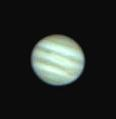

| Jupiter |
Saturday Feb 21 2004, 1:53 am (Australian Central Daylight Time) |
- 35 automatically tracked and combined images.
- 50% minumum quality.
- Dark frame subtraction.
- Unsharp masking and brightness/contrast adjustment.
- Good seeing.
- The GRS is apparent at lower right.
|
 |